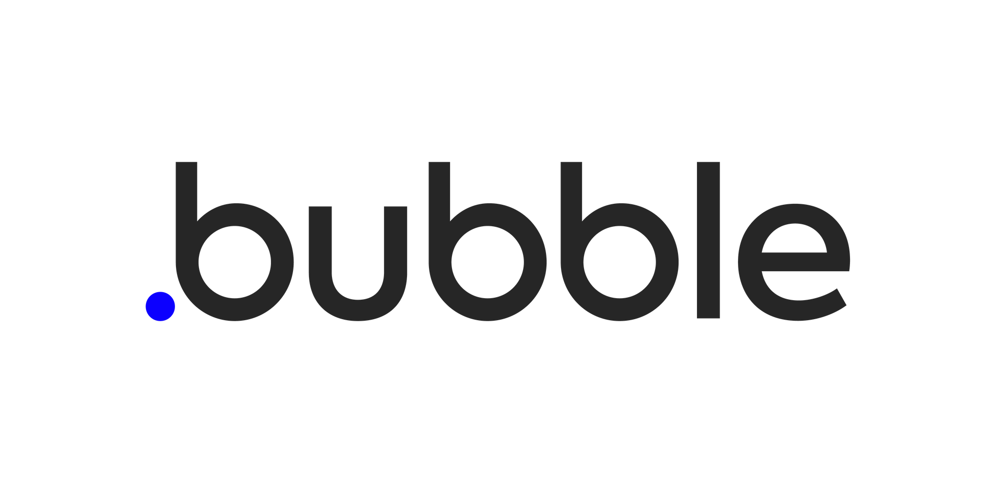
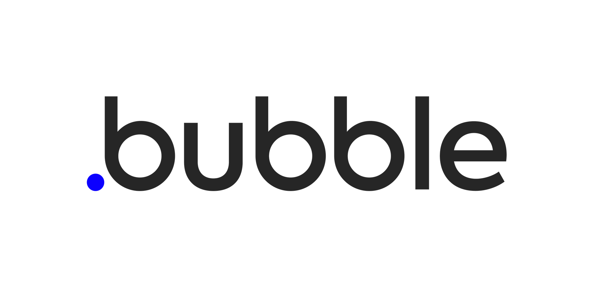
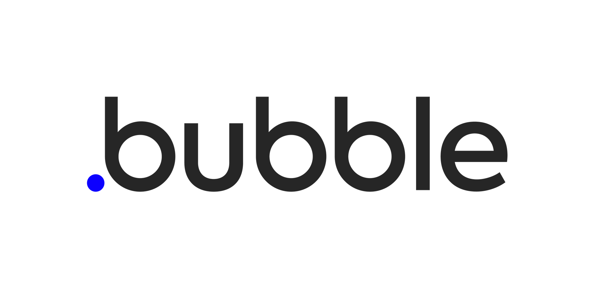

Inventé en 1989 par le chercheur Tim Berners-Lee, le
World Wide Web doit permettre aux scientifiques
du monde entier de s’échanger des informations. Le Britannique développe ensuite un premier
navigateur sur lequel il est possible d’éditer directement les pages web. En 1993, le
WWW devient un
logiciel libre dont les utilisateurs peuvent modifier le code gratuitement. Au cours de la décennie
90, le web poursuit sa progression, notamment pour répondre aux besoins du commerce en ligne
naissant.
Avant l’apparition du premier CMS, toute entreprise souhaitant créer et administrer un site internet
devait faire appel à un développeur pour le coder en HTML. Cela demandait d’engager des budgets
importants pour créer des fonctionnalités parfois très simples, comme un blog, un site vitrine, une
landing page… La plus grosse contrainte était de devoir faire appel à un développeur pour chaque
modification. La création du premier CMS, il y a 20 ans, a permis à de nombreuses entreprises de
développer leur présence digitale beaucoup plus simplement.

WordPress
Il existe de nombreux CMS sur le marché, certains prennent une place dominante sur
celui-ci. Intéressons nous maintenant à un en parliculier : WordPress. Pour vous rendre compte du
poids
que l'entreprise a, en février 2023 WordPress était utilisé par 43,2 % des sites web dans le monde,
ses concurrents directs étaient à 3,8% (Shopify) et à 2,5% (Wix), ses concurrents open-source étaient à
1,8 % (Joomla!) et à 1,2 % (Drupal).
Lancé initialement Michel Valdrighi en 2001 dans le logiciel b2.un logiciel de publication de blog
open-source reposant sur une base de données (MySQL). Michel Valdrighi ajoute de nombreuses
fonctionnalités avant d'arrêter le développement du logiciel pour des raisons personnelles à la fin de
2002. En janvier 2003, Matthew Mullenweg (PDG fondateur en 2005 de la startup d’édition de logiciel
Automattic) et Mike Little corrigent les bogues de b2, ajoutent des fonctionnalités, et renomment le
projet B2evolution, puis WordPress (sur la suggestion d'une amie de Matthew Mullenweg). Le 27 mai 2003,
WordPress (version 0.7) devient officiellement le successeur du logiciel b2 et Michel Valdrighi
réintègre l'équipe de développement.
WordPress est utilisé par des entreprises, des organisations, des blogueurs, des artistes et des
particuliers pour créer des sites web simples et complexes. Il offre une grande flexibilité en termes de
conception et de fonctionnalités, grâce à une grande variété de thèmes et de plugins gratuits ou
payants. La popularité de WordPress peut s'expliquer par sa facilité d'utilisation, sa grande communauté
de développeurs et d'utilisateurs, et son code source ouvert, qui permet à quiconque de contribuer à son
développement et à son amélioration.WordPress a un impact significatif sur l'industrie du Web design en
offrant une plateforme facile à utiliser et flexible pour la création de sites Web professionnels. Cela
a également créé des perspectives d'emploi pour les professionnels du Web, y compris les développeurs de
thèmes et de plugins, les concepteurs de sites Web et les spécialistes en SEO.
Attardons nous maintenant sur un plugin qui, couplé avec WordPress, permet de faire des miracles.
Elementor
Elementor est un constructeur de pages qui fonctionne selon le système Drag
and Drop.
C'est-à-dire que pour construire une page Web via WordPress, il suffit de glisser et déposer les
différents éléments qu'Elementor met à votre disposition depuis son tableau de bord.

 
